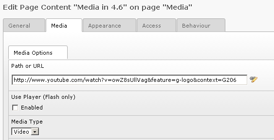
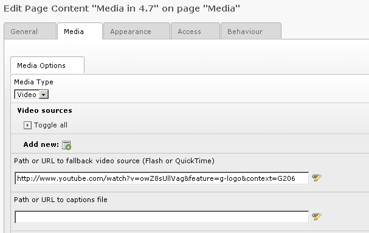

Bug #33357
Media content element doesn't work with YouTube URLs
| Status: | Resolved | Start date: | 2012-01-21 | |
|---|---|---|---|---|
| Priority: | Must have | Due date: | ||
| Assigned To: | Steffen Ritter | % Done: | 100% |
|
| Category: | Frontend | Spent time: | - | |
| Target version: | 4.7.0-RC1 | |||
| TYPO3 Version: | 4.7 | Is Regression: | ||
| PHP Version: | 5.3 | Sprint Focus: | ||
| Complexity: |
Description
The new Media element in 4.7 doesn't work at all with YouTube video's. The Media content elements from 4.6 were silently converted and the old URL was set in the 'Path or URL to fallback video source (Flash or QuickTime)' field.
Unfortunately the frontend only displays a media player or an error message (depending on the rendering setting).
I tried the short URL, long (old) URL, URL from the YouTube embed code, but none of these are recognized.
Besides this, the new flexform is very confusing and not intuitive. It lacks CSH texts.
{kind=link}
{kind=link}
Related issues
Associated revisions
[BUGFIX] Media Element does not play videos with own player anymore
Since the rewrite to FlowPlayer and the additions for accessibility
the MEDIA Content Element is not capable anymore, to play videos which
ship their own player.
This especially is the case for Videos which are from YouTube, Vimeo
and other similiar platforms. Looking at the implementation it seems,
that the detection of own players has been removed (accidentilly).
Rebuild this detection to make external video platform links work again.
Change-Id: I963a74aa3e1ab6d2de95ade903470be71af5c2d4
Fixes: #33357
Releases: 6.0, 4.7
Reviewed-on: http://review.typo3.org/10259
Reviewed-by: Susanne Moog
Tested-by: Susanne Moog
Reviewed-by: Steffen Ritter
Tested-by: Steffen Ritter
[BUGFIX] Media Element does not play videos with own player anymore
Since the rewrite to FlowPlayer and the additions for accessibility
the MEDIA Content Element is not capable anymore, to play videos which
ship their own player.
This especially is the case for Videos which are from YouTube, Vimeo
and other similiar platforms. Looking at the implementation it seems,
that the detection of own players has been removed (accidentilly).
Rebuild this detection to make external video platform links work again.
Change-Id: Ifdc579b12794e09c51bd3ddad0290c2cc9470760
Fixes: #33357
Releases: 6.0, 4.7
Reviewed-on: http://review.typo3.org/10272
Reviewed-by: Steffen Ritter
Tested-by: Steffen Ritter
History
#1 Updated by Jigal van Hemert over 3 years ago
Debugging shows that the processing of the URL is correct (only the new url shortener of YouTube isn't supported but that is another (simple) issue).
The problem seems that:
- the HTML video tag does not support YouTube videos
- FlowPlayer doesn't support YouTube videos out of the box (there is some documentation on various sites on how make some code in flowplayer to support YouTube)
The latter probably means that this has to be done for all the video sites which are currently supported by the mediaWizardCoreProvider in the core.
#2 Updated by Stanislas Rolland over 3 years ago
The YouTube url does not refer to any video media at all. It is a link to a page. If you want you can embed it in an iframe.
#3 Updated by Jigal van Hemert over 3 years ago
It is true that a YouTube (or Vimeo) URL does not refer to a media file. However, it worked in previous versions and the URLs are processed correctly by the code in the core for processing the media element. There are even functions in the mediaWizardCoreProvider for handling URLs from YouTube, Vimeo and other video sites.
Sites which have YouTube (and other) videos in their page content will after upgrading to 4.7 be faced with broken videos.
In the light of the subtitle of 4.7 "standards and accessibility" an iframe is of course out of the question!
This new media element is for site owners and editors a major step back. If such a media element has to be introduced, then it should be a new type of content element and not silently replacing an existing element (and breaking it in the process).
#4 Updated by Ernesto Baschny over 3 years ago
- File media-url-in-45-46.png added
- File media-url-in-47.png added
Some more input (from the thread in the mailing list):
What was called "Path or URL" in the flexform in 4.5 and 4.6 is now called "Path or URL to fallback video source (Flash or QuickTime)". Both stored in the same FF field (at least it won't be dropped during the upgrade): sDEF.lDEF.mmFile:
4.5 and 4.6 flexform¶

4.7 flexform:¶

The previous idea (4.5 - 4.6) was that the editor could enter "anything" in this field (be it an URL he copied from Youtube or a reference to a local file), the "media wizard" would find the correct code for it.
I am not 100% satisfied with how it works in 4.5 (it should do more "magic" like not trying to use the flowplayer if the URL is supported by some media wizard provider - e.g. Youtube), but this is yet another topic.
Some rought idea on how to solve it:
Rephrase "Path or URL to fallback video source (Flash or QuickTime)" into: "Path or URL (fallback video source or original video URL)" and have the "media wizard provider" be called to check if this URL can be handled before doing the "new stuff":
$mediaWizard = tslib_mediaWizardManager::getValidMediaWizardProvider($url);
if ($mediaWizard !== NULL && $mediaWizard->canHandle($url)) {
// then do the old-style MEDIA rendering...
}It's a bit a shame that the new implementation hasn't really looked on how the current methods work in order to consider it from start.
#5 Updated by Steffen Ritter over 3 years ago
- Target version changed from 4.7.0-beta1 to 4.7.0-beta2
#6 Updated by Steffen Ritter over 3 years ago
- Target version changed from 4.7.0-beta2 to 4.7.0-beta3
#7 Updated by Steffen Ritter over 3 years ago
- Assigned To set to Steffen Ritter
- Target version changed from 4.7.0-beta3 to 4.7.0-RC1
#8 Updated by Steffen Ritter over 3 years ago
- Status changed from New to Accepted
#9 Updated by Gerrit Code Review over 3 years ago
- Status changed from Accepted to Under Review
Patch set 1 for branch TYPO3_4-7 has been pushed to the review server.
It is available at http://review.typo3.org/10110
#10 Updated by Gerrit Code Review over 3 years ago
Patch set 1 for branch master has been pushed to the review server.
It is available at http://review.typo3.org/10259
#11 Updated by Gerrit Code Review over 3 years ago
Patch set 2 for branch master has been pushed to the review server.
It is available at http://review.typo3.org/10259
#12 Updated by Gerrit Code Review over 3 years ago
Patch set 1 for branch TYPO3_4-7 has been pushed to the review server.
It is available at http://review.typo3.org/10272
#13 Updated by Gerrit Code Review over 3 years ago
Patch set 1 for branch master has been pushed to the review server.
It is available at http://review.typo3.org/10304
#14 Updated by Steffen Ritter over 3 years ago
- Status changed from Under Review to Resolved
- % Done changed from 0 to 100
Applied in changeset 40341d7f47a6daaf25ac38c988f823089ce02570.
#15 Updated by Andreas Dolleschal about 3 years ago
this fix does not solve the problem with youtube videos. youtube videos simply will not be shown. tested with 4.7.1
#16 Updated by Lorenz Ulrich about 3 years ago
I can confirm this.
#17 Updated by Felix Nagel about 3 years ago
In TYOP3 4.7.1 I'm not able to reproduce this. Standard YouTube links (for example http://www.youtube.com/watch?v=KxOhc-dfEDY) work like a charm (even its still the old embedded code).
#18 Updated by Christian Hennecke about 3 years ago
I can confirm that it does NOT work in TYPO3 4.7.2. I also agree that the flexform is non-intuitive.
#19 Updated by Felix Nagel about 3 years ago
Your're right, Christian. I've just tested this again and can confirm that it works on 4.7.1 and does NOT work on 4.7.2.
#20 Updated by daniel no-lastname-given about 2 years ago
It doesn't work in TYPO3 6.1.1 either for mobile phones and ipads. This Bug still exists.